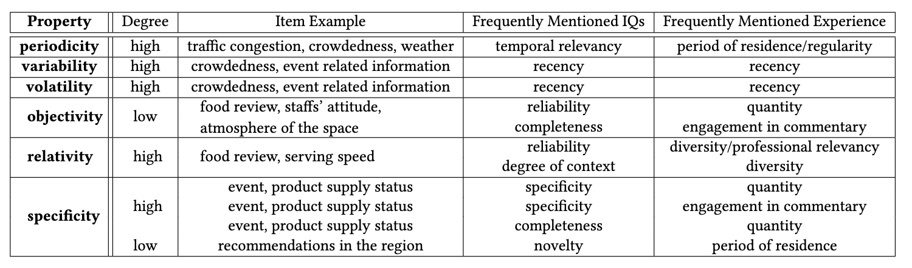

What Kinds of Experiences Do you Desired?
A Preliminary Study of Desired Experiences of Contributors in Location-Based Mobile Crowdsourcing
Regarding this research, interviews with interviewees and qualitative analysis have been completed. Currently we are doing surveys to obtain quantitative data. After obtaining quantitative data and analyzing, we will submitted the poster to CHI Late-Breaking Work 2022.
* The poster attached below is about our former preliminary research (2020).
INTRODUCTION
Mobile crowdsourcing enables its users to learn about location-related information from people with diverse experiences and opinions. However, little research investigates the information quality most relevant to the location-related questions expected by the users from the crowd, as well as the experiences users expect the contributors to possess to answer these questions, respectively. We conducted an interview study (N=22) that extracted five information properties of location-based questions - objectivity, relativity, specificity, temporal regularity, and variability. Based on the perception of the characteristic of the requested information characterized by these properties, participants desired one to several kinds of ten main qualities of the information, and of seven main aspects of desired experience from contributors - period of residence, quantity, recency, regularity, variety, professional relevancy, and engagement in commentary, respectively. A follow-up survey study (N=139) quantifies the characteristics of a list of location-related information according to their information properties that respondents perceived from them.
ROLE
Researcher
COLLABORATORS
Fang-Yu Lin
National Yang Ming Chiao Tung University
Chia-Yi Lee
National Yang Ming Chiao Tung University
ADVISOR
Prof. Yung-Ju Chang
MUI Lab / National Yang Ming Chiao Tung University
Prof. Yu-Chun Yen
University of California San Diego
INTERVIEW
We conducted semi-structured interviews with 22 participants (12 males; 10 females) who had experiences in seeking and/or providing location-based information online. We recruited the participants through several Facebook Groups aimed for recruiting research participant in our country. Participants were provided with NT$300 as study compensation. Participants’ ages ranged from 21 to 50 years old.
In the interview we asked participants what kinds of information they had experience in obtaining or would hope to obtain from location-based crowdsourcing platforms, respectively. Then, we asked them what kinds of experience and backgrounds they would expect or desire the contributors on the platforms to possess. Our aim was to prompt participants to reflect on the similarities and contrasts in the experiences the desired for various kinds of location-related information. Through the comparison and contrasting process, we hoped to identify the key properties of the location-related information they were seeking that distinguished the information qualities they expected, as well as the experiences they desired from the contributors to possessed, respectively. To facilitate and diversify such comparisons, we provided a pile of cards (see the figure below) that offered various examples of location-related experiences and information. The purpose of these cards was to provide participants with some materials as inspirations or cues that helped them recall their prior experiences in acquiring and seeking the same, similar, or other different but relevant information. The development of cards was iterative–new cards were added to the pile whenever the researchers learned new types of location-related experiences or information that was mentioned in the interview. A total of 23 types of location-based information and 11 types of experiences cards was developed.
DATA ANALYSIS
We conducted a thematic analysis of our interview data using the qualitative analysis software MAXQDA. Generation of the codebook was guided by our research questions - identifying the key properties of location-related information participants would hope to obtain via crowdsourcing, the information qualities they expected from the information, and the aspects of experiences they desired the contributor to possess. To ensure the reliability of our coding process, three researchers first coded interview transcripts from three participants independently and discussed the codes together. The researcher explained the word they chose to use, discussed the similarities and differences in their interpretations, and decided the code schema. For each coded transcript, the coders compared and discussed the discrepancies and clarity of the codes until full consensus was reached. After all the discrepancies were resolved, they updated the codebook.
PRELIMINARY INSIGHTS
To sum up, the interview results showed that participants considered different aspects of qualities and contributors’ experiences respectively for different kinds of location-related information. The requested information could be described with five properties, and different combinations of them seemed to correspond to different kinds of information qualities that participants deemed matter to them; consequently, they desired different aspects of location-related experience from the contributors. However, thus far, we still lacked quantitative evidence that confirms the relationship among them. To identify their relationships, yet, we found it desirable to first survey the top list of location-related information items that potential users of a mobile crowdsourcing platform would often need from the crowd, as well as how users perceived the characteristics of various location-related information items. Having such information would allow us to design an online experiment that asks users of their desired information quality and experiences of the contributors for specific location-related items in our next step. We describe the survey in the section below.
SURVEY
Before we conduct an online experiment to investigate the relationship between the identified factors - information property, information quality, and experience of contributors - we first surveyed location-related information items that would be representative enough (i.e., most frequently sought by users of mobile crowdsourcing platforms, having appeared in the literature of mobile crowdsourcing) to be included in the experiment. We developed an online survey that included location-related information items that: 1) both have been adopted as a crowdsourcing task in the mobile crowdsourcing literature and 2) commonly mentioned in our interview. These information items included food review, product supply, product price, crowdedness, event-related information, condition of public equipment, public issues in a region (pollution, noise, safety, etc.), parking availability, scene description, and recommended points of interest (POI) in a region.
to be continue...
CONCLUSION AND FUTURE WORK
Both our interview and survey results showed that while some information items were perceived as similar in many aspects, more types of information items were perceived as distinct from each other. This, according to the interview results, is likely to make users to expect different aspects of quality for the obtained information and, as a result, desired different kinds of experiences that the contributor should possess to answer these location-related questions. To proceed to answer our research questions, i.e. our next step is to conduct an online experiment to clarify and verify the relationship between information property, information quality, and experiences of the contributor, such that we can obtain a better understanding of what kinds of contributors the mobile crowdsourcing platform should assign location-related tasks to to fulfill the information seekers’ expected and desired information quality